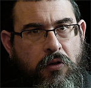

What Does It Mean to Be a Lubavitcher? - Part 2
The following is a transcript of a farbrengen by Rabbi Yossi Paltiel last year in Melbourne, Australia in honor of Yud-Beis Tammuz • Part II

This is the story of the Rebbe Rayatz’s arrest:
They took the Rebbe in the middle of the night, with every intention of shooting him by daybreak. They knocked on his door at two-thirty in the morning, a typical Soviet tactic. The Rebbe had just finished an evening of private audiences. He was with his family eating a small meal when the NKVD agents stormed into the house, and said, “Anyone who wishes to enter is welcome – but nobody leaves.” (It is interesting to note that later, Stalin had all these agents executed.)
As the drama unfolded, it started getting noisy. The Rebbe turned to them and said, “Listen, my mother is asleep. We don’t want her to wake up, please be quiet.” Despite this plea, they continued to make noise, and the Rebbetzin awoke.
Rebbetzin Shterna Sara came downstairs, began to understand what was going on, and became visibly agitated, in a state of panic. The agents were caught off-guard by this and didn’t know how to react. The Rebbetzin began screaming to her deceased husband, the Rebbe Rashab, Nishmaso Eden: “Look, they’re trying to take your righteous son away!” Completely consumed with grief, she put out her hands and pleaded, “Take me instead! Leave my son!”
The Rebbe Rayatz asked the guards if he could try and calm her down. Since they apparently had no idea about the type of people they were dealing with, they agreed. The Rebbe sat and had a few minutes alone with his mother, and this miraculously ended up saving many lives perhaps even his own…
They brought the Rebbe into their headquarters at around five o’clock in the morning. A few hours later, he was told to go into a certain room, Room 60. The Rebbe Rayatz later said that he had a moment of sheer intuition. “Since they never told me what time to arrive,” he decided, “What’s the rush?” So he sat down and started smoking a cigarette.
As the Rebbe was sitting there waiting, someone noticed him. “What are you doing here?” the man asked.
“Well,” the Rebbe replied, “they told me to go to Room 60, but I’m not in any particular rush…”
“Room 60?!” the man said, totally stunned. “There has to be some mistake…” Had the Rebbe gone into that room, he never would have come out alive…
The Rebbe Rayatz would say later that during the entire eighteen and a half days that he was in jail, his father never left him for a moment.
Yet, the treatment he received at the hands of the Soviet interrogators was positively brutal. The physical abuse, the torture, the violence inflicted upon the Rebbe is indescribable. Although he was only forty-seven years old at the time, he suffered physical ailments. Furthermore, the Rebbe, of course, was a “Schneersohn”; he was stubborn; a very difficult prisoner. He never made eye contact, and he never spoke in Russian, only Yiddish, even though he knew Russian fluently. He never allowed them to intimidate him. He resolved to never let them get him upset, and this drove them mad.
Once at a farbrengen, the Rebbe quite emotionally told the story about how the Soviet officials entered the Rebbe Rayatz’s cell and told him to stand up. The policy in Soviet prisons was that one had to rise whenever he received official instructions or information. They wanted to tell him that he was being released from prison and sent into exile, which was an obviously preferable sentence. In other words, they were coming to give him what amounted to good news. But the Rebbe refused to stand.
“If you don’t stand up, we’re going to hit you,” the officials threatened him.
“So, you’ll hit me,” the Rebbe replied.
They proceeded to beat the Rebbe until they couldn’t hit him any longer. They left and returned half an hour later. They told him again to stand up, and again he refused. This resulted in yet another vicious beating. Finally, when the guards tired from their vicious attack, someone told the Rebbe to enter the office because they wanted to tell him something. He entered the office, and they finally told him that he was free to leave.
ABSOLUTE MARTYRDOM FOR YIDDISHKAIT
This was the position he took and the example he set – one of indescribable self-sacrifice. The Previous Rebbe’s mesirus nefesh, his initiative, and the circumstances of those times cannot be explained in logical terms. It was martyrdom in the clearest sense of the word.
This isn’t something that Jews celebrate or embrace. Yet, when G-d Alm-ghty chooses with His Infinite Wisdom to impose this kind of test upon the Jewish People, and a Rebbe (a leader who has tremendous Ahavas Yisroel for every Jew) comes along and says, “This is a moment of self-sacrifice Al Kiddush Hashem,” he leads by example.
They arrested him, they imprisoned him, and, as the Rebbe Rayatz described, his verdict listed three possibilities. On the first line, they wrote “execution,” but it was crossed out. On the second line, they wrote “ten years of slave labor in Siberia,” and it too was crossed out. Finally, on the third line, there appeared the words “three years of exile in Kostrama.”
They came to the Rebbe Rayatz on Friday, Rosh Chodesh Tammuz, and told him that he was free to go. He asked if he would be able to spend Shabbos with his family, but they would not consent because he had to leave that afternoon for Kostrama and arrive the following morning, on Shabbos. When the Rebbe said that he would not desecrate the Shabbos, they told him that he would have to spend the next two days in prison.
It’s impossible for people such as us with our Western way of thinking, yet old enough to remember the Soviet Union, to understand how suicidal his decision was. What could have happened to the Rebbe from that Friday afternoon until the following Sunday afternoon is unimaginable. In his sichos, the Rebbe wonders whether the Rebbe Rayatz was halachically permitted to do such a thing. Is a person allowed to risk his life for Shabbos? The Rebbe’s answer: The Previous Rebbe had no life without Shabbos. No Shabbos, no life.
A TWO-DAY YOM TOV – THANKS TO STALIN
On Sunday afternoon, Gimmel Tammuz, he left prison, went home, and spent a couple of hours with his family. He was given a choice as to how he would reach Kostrama: He could make the trip by government transportation, which essentially meant traveling in a cattle car, or he could get there on his own, which he chose to do. The following day, he would present himself at the office and inform the officials there that he had arrived.
The arrangement was for him to report at the government offices each Wednesday, the first day of the Soviet work week, to show that he hadn’t run away. Why Wednesday? Because Stalin (may his name be erased), couldn’t allow Shabbos to be the day of rest, since that would allow the Jews to celebrate their Sabbath properly (perish the thought). He couldn’t allow, l’havdil, Sunday to be the day of rest, because that would allow the Russian Orthodox to commemorate their Sabbath. Therefore, Tuesday in the U.S.S.R. became “Shabbos” and Wednesday became “Monday.”
On Gimmel Tammuz, the Rebbe sat at home with his mother, his wife, and his daughters, and then he packed his belongings and made his way to the train station. When he arrived there he saw thousands of Jews waiting to bid him farewell. Every person assembled there was literally risking his life simply by being in the Rebbe’s presence. It demonstrated the effectiveness of the Rebbe’s inspiration and leadership. He aroused Jews, raising them to an incredible level of self-sacrifice. “All these people came to see me off,” the Rebbe Rayatz said. “I have to say something.”
The Rebbe had just gone, in effect, from out of the fire into the frying pan; his chances of surviving had only slightly improved. He got up on the train station platform and made one of the most powerful speeches by a Torah leader in the annals of Jewish history, as hundreds of KGB agents stood watching.
He told the crowd that some eighty-five years earlier, his great-grandfather, the Tzemach Tzedek, whom he called “a true person of self-sacrifice,” met with agents of the then-Czarist government who wanted to make changes in Jewish education. “My Elter Zeide, the Tzemach Tzedek, said then that when G-d Alm-ghty destroyed the Beis HaMikdash and sent the Jewish nation into exile, he subjected them to the sovereignty of the Gentiles and their political ideologies. We didn’t choose to go into exile, and we won’t choose the time when we will leave the exile. G-d sent us into exile, and He will redeem us from this exile. However, all nations of the world must clearly know that only our bodies were subjected to suffering at the hands of others, but when it comes to matters of our soul and our faith, we say with the Jewish stubbornness of thousands of years, ‘Don’t touch, this doesn’t belong to you.’”
He went off to Kostrama on that Sunday and registered with the office the following day. While he was in the office, they told him, “Since Wednesday is the start of the work week, come back then to register again,” and he did so. The following Tuesday, when all the government offices were closed, he met an officer who told him, “We just received a telegram from Moscow stating that you’re free to go home. However, since the office is closed, this is off the record. Come in tomorrow morning and they’ll let you leave.”
So thanks to Stalin, we have two days of Yom Tov – Yud-Beis and Yud-Gimmel Tammuz – instead of just one, because the Soviet Union decided to make Tuesday the day of rest. That’s how the Eibeshter operates.
IN AMERICA
In 1929-1930 the Rebbe Rayatz visited America. You have to understand that back then, the Previous Rebbe was hailed by the Jewish world as Hero #1. Whether you were Orthodox, Conservative, or Reform, he represented the pride of the Jewish People. People came by the tens of thousands to see “the rabbi who stood up to Stalin and survived to tell the tale.”
European Jews would come to America to raise funds for their yeshivos and various causes, and American Jewry was incredibly generous. They opened up their wallets and supported Eastern European Jewry in a very real way, but also in condescending terms. Their attitude was, “We’re better than they; they’re living off of us.”
The Rebbe Rayatz came to America with a very different message: “I’m going to tell you what to do.” Americans fell in love with him. If you look at the pictures from the visit, he looked like a king.
The Rebbe Rayatz was in America from Elul 5789 until Tammuz 5790. At the conclusion of his visit, American Jewry presented him with an offer to relocate to the United States. An official delegation came to the Rebbe and told him, “We’d love it if you would settle in America.” Had he done so, he would have had greater access to much needed funds for his activities and he also would have received better medical care than in Poland, which is where he finally chose to settle. The Rebbe told the delegation that he would consider the matter. At the end of that summer, after much reflection, he wrote a letter to American Jewry thanking them for their incredible hospitality, their warmth and love, etc., but he had decided to decline this proposal for the time being.
I had an older colleague in yeshiva who had been a student in Poland, and he told me once that the Rebbe Rayatz had said privately, “The reason I don’t want to go to the United States is that I want to be a Rebbe with Chassidim, not a Rebbe with the world.” He wanted to be a regular Rebbe shepherding his flock of Chassidim, teaching them how to daven, talking to them about Chassidus. He didn’t want to worry about the whole world.
Fast forward a decade and World War II broke out. Even before the outbreak of the Second World War, initiatives for relocating the Rebbe to the U.S. had already commenced. The reason that the Rebbe had a much easier time getting to America than most other Jews in Europe at the time was that a lot of the paperwork had already been done.
He arrived in New York at the age of sixty, broken in body; and had he been broken in spirit, no one would have held it against him. But this man’s spirit could not be broken. “I started over like a child learning how to walk,” the Rebbe Rayatz described, as he established small but important initiatives to change the mindset of America, “to make America into what Europe had been. America iz nisht andersh (America is no different).”
However, the consequence of this journey and relocation was that the meaning of the term “Lubavitcher Rebbe” had changed. It no longer meant “a Rebbe with chassidim.” Instead, it now meant “a Rebbe with the world.” We are the Rebbe’s Chassidim, and we bear part of that. It’s a lot easier to be Bobov or Belz; it’s certainly simpler. To be a Lubavitcher means to live in many worlds and to live each of these worlds to the extreme.
TORAH AND MITZVOS IS THE LIFE OF A CHASSID
This has all been a very nice story, but now comes the real question: What does this mean to us? Superficially, it means very little to us. This happened so long ago. This didn’t happen to us, or even to our parents. It happened to our grandparents and great-grandparents. We can’t relate to the story of the Rebbe Rayatz in Russia and the self-sacrifice that he aroused, inspired, and demanded from his Chassidim.
Today is Yud-Beis Tammuz, and the bottom line is that mesirus nefesh must be a part of our hard drive. While it’s a constant, it also changes in form. If in the Soviet Union, self-sacrifice meant a willingness to run blindly through the fire, which is both simple and extreme, the self-sacrifice in our lives pertains to the little things. It involves a definition of self, which is quite a challenge.
The Rebbe writes in several places: “I don’t understand you. The Chassidim are coming out of the Soviet Union. They lived and breathed mesirus nefesh for half a century. Yet, they come to the West, and within six months, they’re just like the rest of the Westerners. They’re preoccupied with themselves, calculating, thinking about tomorrow, bank accounts, retirement accounts – where’s all the mesirus nefesh?”
The circumstances were different, the Rebbe said. The self-sacrifice in the Soviet Union was very serious, but simple. The challenges in mesirus nefesh that we face are not quite as acute, but they’re subtle, and in some ways, they’re more difficult.
What is the Rebbe’s message from Yud-Beis Tammuz? What is the life of a Jew and a Chassid? What does it mean to be a Lubavitcher? Quite simply, the answer is: What matters in my life is Yiddishkait, Torah and mitzvos, Ahavas Yisroel, chesed, mivtzaim – that’s my life. What about making a living? That’s also important, but my life is Yiddishkait.
Evidently, this is a test for some of us, most of us, perhaps even all of us. And this is what Yud-Beis Tammuz has to mean to us. We have to find mesirus nefesh within ourselves, caring first and foremost about Yiddishkait. It also means that I’m prepared to make enormous sacrifices, albeit relatively small ones in relation to the sacrifices made by our grandparents in the former U.S.S.R., and make them my priority.
YOU’RE NOT CONSULTING THE LUBAVITCHER REBBE?
Back in 1948, a Jew traveled from S. Francisco to New York to meet the Rebbe Rayatz. He was an American businessman who had some European roots and knew about “the Rebbe business,” i.e. the special connections that Rebbes have, and he decided to make the Previous Rebbe his consultant. He made frequent visits to the Frierdike Rebbe, and consulted with him about his business affairs.
He was not disappointed. The Rebbe’s advice worked like a charm. As long as he followed the Rebbe’s advice, his business went well.
Of course, the Rebbe was old and ill at the time, and he also couldn’t speak clearly. Yet, it all seemed like such a safe thing to this Jewish businessman: Here’s this innocent holy man who might as well be living on a different planet, but I make a good living because he has his connections. However, what he didn’t realize was that there was a tremendous worldly strength to this feeble old man. One day, he found out.
On one occasion, as he was leaving yechidus, the Rebbe turned to him and said, “Oh, by the way, I understand that your son is graduating from the eighth grade. What are your plans for high school?”
The businessman became very animated and excited. “Ah, my only son, the love of my life, the apple of my eye! He’s going to the best high school; he’ll be an excellent student. Then, he’ll go to an Ivy League college and become a really influential person!”
The Rebbe replied, “I propose that you put him on a train, send him to New York, enroll him in a yeshiva, and he’ll learn to be a Jew.”
Suddenly, the man became uncomfortable, and the negotiations began. He started telling a whole bunch of stories, but the Rebbe Rayatz wasn’t easily dissuaded. One explanation followed another, and the Rebbe kept insisting that everything would work out fine for his son in yeshiva and he wouldn’t lack anything in his education.
Finally, after all the lies failed to convince the Rebbe, the man figured that he might as well give the Rebbe the real reason. “My wife and I decided that on the question of our son’s education, we are not consulting the Lubavitcher Rebbe…”
The Rebbe looked at this businessman and said, “I want to ask you something. You just traveled three thousand miles to consult with a man who is not an American citizen, does not speak English, has never been in S. Francisco, has never seen your business, doesn’t have the slightest idea how it runs, and you follow him blindly. Whatever I tell you is kosher. Now, however, I am discussing with you my very life, why I exist. Yet, on the question of your son’s education, you’re not consulting the Lubavitcher Rebbe?”
KEEPING THE FIRE HOT
This is Lubavitch. This is Chassidus. The essence of Lubavitch is a values system. It teaches that we indoctrinate our children, hopefully in a successful manner, with an attitude stating that the most important thing in their lives is Yiddishkait. For our part, we try to lead in the only way possible – as a living example. Furthermore, in today’s day and age, there’s also another component: It’s not enough to be a Jew; you have to make another Jew. Whether or not our shlichus is in an official capacity, a Lubavitcher Chassid has a mandate: Although self-sacrifice to us, thank G-d, is a story that took place some eighty-five years ago, the spirit of that self-sacrifice resides within each one of us. It must be utilized not to do extreme things, certainly not to do destructive things, but to engage in the active pursuit of a life defined by the values of Torah and Chassidus, not those defined by this physical world, the so-called “real world.”
In more practical terms: The way life works is that we focus on things that are very important to us. As a result of this focus, other things tend to become neglected. When a young man learns in yeshiva, his focus is on Torah and Chassidus. However, the reality of life is that there are other things which require our attention: parnasa, our children, our home, etc., while Yiddishkait becomes something that we continue to do. We start fulfilling Torah and mitzvos mechanically, by rote, i.e., davening and learning Torah becomes like eating, sleeping, or throwing out the garbage. It loses its luster and its priority.
One example of using the strength of mesirus nefesh in little ways is this simple truth: We must continue to grow as Jews. As long as a Jew lives, he has to grow in Yiddishkait. This is not easy, and many of us have forgotten this. The message of Yud-Beis Tammuz is a message of self-sacrifice, and the message of self-sacrifice for us is to continue making Yiddishkait important. How? Grow, do more. If someone doesn’t daven, he should daven perhaps once a day. If he davens once a day, he should start davening twice a day.
A woman once told me that every time she davens, she gets dressed and puts on her sheitel. She wants to give proper honor to her davening, even though she’s doing it in the privacy of her own home. “When I’m talking to G-d, I’m going to look like a mentch.” It’s a little thing, but it’s an incredibly meaningful thing, because it conveys a message that davening is important.
Each one of us at our own level who wants to have a connection to this fantastic legacy must be prepared for self-sacrifice. How do we achieve this? By keeping the fire hot. Yiddishkait has to be important. Our davening, our standard of kashrus, our standard of tznius have to be maintained and raised. When we allow things to happen in a totally habitual and lifeless manner without any vitality, they slowly tend to deteriorate, losing all their uniqueness and enthusiasm.
HOW CAN I HELP HIM LEAVE?
I’d like to conclude with an amazing story:
One of the greatest sages of our generation was a gaon by the name of HaRav Pinchas Hirschprung, of blessed memory, former chief rabbi of Montreal. He was a student from the old Lublin yeshiva of pre-war Europe. He knew Shas with Tos’fos by heart, verbatim; he had a photographic memory.
During the sixties, Rabbi Hirschprung traveled to Romania. In one of the cities he visited, he met a religious man with a beard and peios. He also met his wife wearing a sheitel, and their children with peios and yarmulkes, something totally unheard of in Romania in those days. The man told Rabbi Hirschprung, “I am all of Judaism in this city. I’m the shochet, the mohel, the melamed, the rav; and I’ve been doing this for years. However, I have children that I have to raise, and I cannot raise them here. I need to get out of here and go to Eretz Yisroel; I’ve paid my dues, I’ve done my time. There’s only one man who can help me. When you go back to North America, please make an appointment to see the Lubavitcher Rebbe and tell him about me. Explain my situation to him, and ask him to do what he can to help me leave Eastern Europe.”
Rabbi Hirschprung returned to New York and went in for a yechidus. The Rebbe asked about every detail of Rabbi Hirschprung’s trip: the cities he visited, the shuls, the local communities, etc.
Finally, Rabbi Hirschprung gave a detailed report to the Rebbe about the request made by this rav. After hearing the whole story, the Rebbe put his head down and thought for a while. He then raised his head, looked at Rabbi Hirschprung, and said, “My father-in-law, the Rebbe, would actually send people to such places. If he leaves, who will be the shochet? Who will be the mohel? Who will be the rav? How can I help him leave?”
Rabbi Hirschprung later commented, “I stood in the Rebbe’s presence, and for the first time, I realized the meaning of the term ‘Rebbe.’ I understood the responsibility, the vision, and the dedication.”
We are on the homestretch to Moshiach, and with G-d’s help, we will all do our little acts of self-sacrifice, which will surely usher in the golden era of Moshiach Tzidkeinu.
A gut yom tov!
Rabbi Yossi Paltiel. "What Does It Mean to Be a Lubavitcher? - Part 2." Beis Moshiach, no. 840 (July 5, 2012).